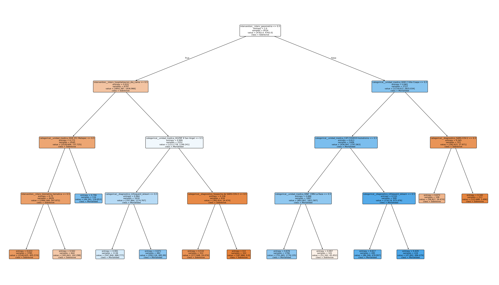

Bosque de decisión
Predicción de Rendimiento Escolar
Usa la estructura del bosque entrenado en tu script original para emitir el resultado y explicar los votos de cada árbol.
Votos del bosque
Dataset base
| Horas | Asistencia | Tareas | Resultado |
|---|
Dashboard clínico
Pronóstico Clínico COVID-19
Simulación funcional inspirada en tus paneles de referencia, con factores interpretables para explicar el riesgo.
Puntaje clínico
0%Factores considerados

Imagen de referencia del árbol clínico generado en tu flujo Python.